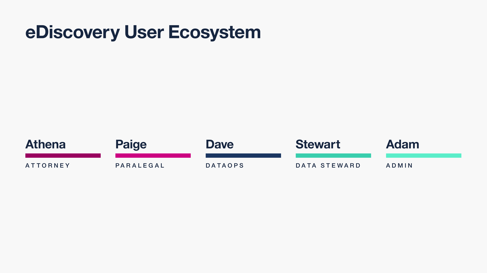

IBM StoredIQ for Legal
Rethinking human-centered legal e-Discovery
The Project
Introduction
In November 2015, I joined the IBM Analytics Platform team to help build IBM StoredIQ for Legal, an electronic discovery tool designed to help legal staff and IT departments manage legal matters and respond to litigation.

Discovery & Governance 101
Modern Fortune 500 companies produce an unfathomable amount of information every single day: everything from HR records and financial statements to cat GIFs posted to Slack. Consider the most common form of electronic data created by organizations: email. An average employee at a large company like IBM sends and receives around 50 emails on a normal work day. After just one year of service, this employee would have racked up 13,000 emails. This means that every year a company like IBM sends and receives about 5 billion emails! Storing this data, either on premise or in the cloud is one of the largest expenses most fortune 500 companies face. And all evidence signals that in the years to come, companies will create even more data each year.
While retaining this data is costly, when companies are involved in a lawsuit they must be able to produce evidence when requested. In fact, most industries require that companies retain data for a certain amount of time, regardless of the size.
The focus of StoredIQ for Legal is to give paralegals, attorneys and IT staff the tools they need to discover and produce relevant information when they are facing impending litigation or an internal investigation.
The Challenge
Previous releases of StoredIQ for Legal had made huge strides towards rethinking IBM’s existing portfolio of legal tools into a single, modern product that addresses many aspects of the electronic discovery process. The product itself began as an experiment in a pilot program within IBM Design and was the result of a human-centered redesign of the entire governance portfolio.
When I joined the team, the product allowed customers to organize their legal matters, understand which employees or custodians within their company may have data that’s involved in a matter and notify these custodians that they are legally obligated to not destroy the data in their possession.
In addition to ensuring that employees retain data from their own devices, another important part of the discovery process involves coordinating with the IT teams who manage large data sources or repositories within a company. Legal staff must be able to identify, preserve and collect data wherever it exists in a company, and this was a weakness with the previous iteration of StoredIQ for Legal.
Before this release, the only data sources that a paralegal could identify, preserve and collect data from were servers indexed by another IBM tool called StoredIQ. However, companies are legally responsible for governing and producing data wherever it’s stored, not just in places conveniently indexed by StoredIQ. For the third release of the product, I was tasked with designing an experience that improved the data request process. Specifically, we needed to allow paralegals to gather evidence from any place data may be stored, both physically and digitally.
My Role
I joined the team immediately after the second release launched and was able to participate in the kickoff planning workshop for the third release. As this was my first time working on an IBM release from initial research to the delivery of a final product, I was incredibly excited and nervous to learn all about the nitty gritty details involved in shipping something at this scale. It was really helpful to have an insanely talented group of collaborators to lean on and grow with throughout this release.
Leadership:
- Irina Simpson - Senior Product Manager
- Masato Nuguchi - Senior Technical Staff Member
- Thomas Hampp - Software Architect
- Rose Newton - Design Team Scout Master
- Vickie Culbertson - Design Team Project Manager
- Shelby Aranyi - Design Team Lead
Team members:
- Derrick Ligon - Lead Visual Designer
- Noelle Hoffman - Visual Designer
- Chengqi Zhu - Prototyper
- Amanda McMicken - Visual Designer
- Meghan Corbett - Design Researcher
- Lincoln Neiger - Design Researcher
Research
Learning how to learn
While designers often talk about how design research was conducted and the insights they uncovered during the process in portfolio case studies, one thing I rarely see discussed is the unsexy and sometimes frustrating informal research that a designer must personally go through to understand the space.
Designing products at IBM is hard. The problems we attempt to solve here are complicated and nuanced and massive. And being a new designer at IBM is particularly difficult. While the company provides you with an excellent support system, it’s intimidating to be surrounded by members of your product team who have been operating in the enterprise product space for 20 or 30 years and are experts in their craft.
Admitting “I don’t understand” doesn’t come naturally for me. When I first joined the team as a new designer, I felt overwhelmed by the subject matter. Additionally, the organizational structure of our team confused me. It appeared that we had many different offerings that did roughly the same thing, yet I had no understanding of how the product I was working on fit with any of the other products in the portfolio. Because my ego got in the way, my first instinct was to pretend that everything was fine and that I didn’t need help. I thought that expressing vulnerability would be seen as a weakness. But allowing myself to eventually get comfortable and truthful about my ignorance in this space and regularly asking questions was immensely helpful for me as I was learning how to identify and solve potential pain points within the domain.
So before I could contribute in a meaningful way to the design research process for the release, I had to first go through a sort of second bootcamp where I tried to learn as much as I could about IBM’s data governance and discovery portfolio. To do this, I set up recurring meetings with my design lead. Every time we met, I would barrage her with a list of questions I still had trouble with. I read through the documents and artifacts that the design team had created during previous releases to understand the personas we were solving for. Additionally, I set up stakeholder interviews with the PMs and dev leads of some of the other products in our portfolio. It was helpful for me to synthesize these findings into a single stakeholder map. I even watched reruns of legal TV shows like Matlock and Better Call Saul (OK in hindsight that wasn’t required).
After several weeks of learning about the legal governance space and our portfolio of products internally, I was able to go into the world and learn from real users.
Sponsor user program
One of the things that drew me to IBM Design was its commitment to understand and empathize with real human users. Instead of defining success by sales metrics or technical features, IBM Design strives to keep our users as the North Star that guides our product design practice. To help us stay focused on solving human needs and incorporating feedback from real people, we regularly work with several teams of sponsor users from all around the world. While most of our sponsor users come from large or fortune 500 companies, they all operate in wildly different industries and jurisdictions. For example, we often collaborate with legal teams from Japanese automobile companies, German banks, multi-national insurance companies and American health food retailers.
Early in the design process of StoredIQ for Legal, I got to participate in a contextual inquiry and co-design session with one of these groups of sponsor users. For this visit, I went on site with two design researchers and a visual designer to the North American headquarters of a major automobile company based in Los Angeles. Our goal was to understand how paralegals and attorneys collaborate with IT staff to identify, preserve and collect evidence. During the visit, I got to observe our users conduct their day to day business using a legacy version of our software. I listened to them describe their processes for handling data relevant to legal matters and how difficult it is to ensure that requested information is complete and defensible. We even got to co-create some very low-fidelity paper prototypes of solutions to some of the problems they were describing.
Me and an eDiscovery IT staff member co-designing paper prototypes
Derrick and Virginia discuss an as-is scenario with a sponsor user paralegal
Writing potential job stories with sponsor user paralegals
After returning to Austin, I worked with our research team to synthesize our findings. I made an as-is journey map, drew up a user-ecosystem diagram and refined our personas based on the new information. Finally, we shared our insights to the rest of the team in a quick playback presentation. Together, we identified and prioritized the following pain points we wanted to address:
- When paralegals request custodial data from IT teams, they currently have very little visibility into the status of their request and have no good way to understand when they will receive the results
- IT teams are often asked to fulfill data requests over the phone, email or in person by paralegals. These ad-hoc requests tend to make the IT teams we talked to feel like they are in a constant state of emergency and overwhelmed.
As we moved into the production portion of the release, we referenced these pain points and artifacts to ensure that we were focusing on solving the right problems.